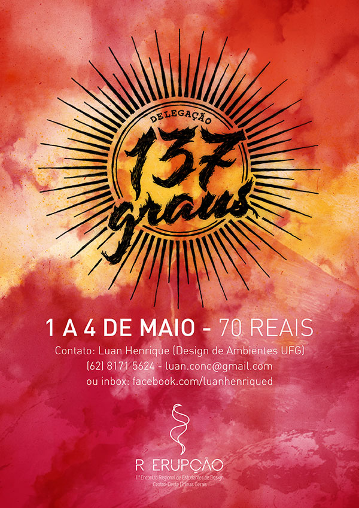

De 1º a 4 de maio de 2015 acontece o 11º Encontro Regional de Estudantes de Design em Caldas Novas, o R Erupção , e os estudantes de Goiânia marcarão presença com a Delegação 137 Graus. Para isso foi feito o cartaz de divulgação baseada nos conceitos do evento e também na sua identidade:
"O evento tem como proposta trazer uma nova visão de encontro de design à organização dos encontros de estudantes no país. Propondo uma reflexão sobre a capacidade de um encontro utilizar o design como ferramenta solucionadora de problemas em si, desenvolvendo e trazendo melhorias não só para o ambiente do encontro em questão (trazendo o conceito de Design de território), mas também a todos participantes dessa experiência denominada ‘R Design Erupção 2015’. O processo de transformação objetivado, se traduz através de uma metáfora: A 'erupção vulcânica' associada a sua capacidade de transformação e renovação.
Tendo a paixão canalizada como principal impulso para motivação e engajamento, o encontrista durante o evento será instigado a entrar em erupção. Uma erupção de conteúdo, vivências, ideias, ações e mudanças que reunidas, são instigadas e concentradas ao máximo, até explodirem acarretando a transformação, tanto particular quanto mútua entre todos os participantes. De forma divergente, utilizando o centro (encontro) como ponto de partida para disseminar a mudança, o participante terá o design e todas as suas áreas de atuação como insumos para sua transformação e desenvolvimento pessoal, assim como as aplicações no espaço em que estamos inseridos. Da mesma forma que funciona um vulcão ao entrar em erupção, ao mesmo tempo que destrói, ele dá liga a todo o terreno a sua volta, transformando elementos diferentes e separados em um algo sólido, único e renovado, um terreno sólido e fértil.
R Erupção 2015
Entre em erupção
#vaiserquente"
